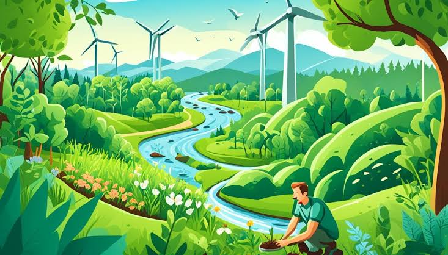

- Desenvolvimento Econômico Sustentável: O desenvolvimento econômico sustentável é um conceito que busca conciliar o crescimento econômico com a preservação ambiental e a equidade social. Isso significa promover o progresso econômico sem comprometer os recursos naturais e a qualidade de vida das futuras gerações.
- Infraestrutura e Planejamento Urbano-Rural: O planejamento urbano-rural e a infraestrutura são fundamentais para promover um desenvolvimento sustentável e integrado entre áreas urbanas e rurais. Esse planejamento busca atender às necessidades das populações, garantir a eficiência no uso de recursos e minimizar os impactos ambientais.
- Educação e Capacitação: A educação e a capacitação desempenham um papel crucial na integração sustentável entre áreas urbanas e rurais, promovendo o desenvolvimento econômico, social e ambiental. Essas práticas buscam capacitar indivíduos e comunidades para que possam participar ativamente do desenvolvimento local, adotar práticas sustentáveis e se beneficiar das oportunidades que surgem da interação entre o campo e a cidade.
- Conservação Ambiental: A conservação ambiental desempenha um papel essencial na integração entre áreas urbanas e rurais, promovendo um equilíbrio entre o desenvolvimento humano e a preservação dos ecossistemas naturais. As práticas de conservação ajudam a garantir que os recursos naturais sejam utilizados de forma sustentável, beneficiando tanto as comunidades urbanas quanto rurais.

- Políticas Públicas e GovernançaPolíticas públicas e governança eficazes são essenciais para a integração sustentável entre áreas urbanas e rurais. Elas ajudam a alinhar os interesses e necessidades de ambas as áreas, promovendo um desenvolvimento equilibrado e a conservação dos recursos naturais.